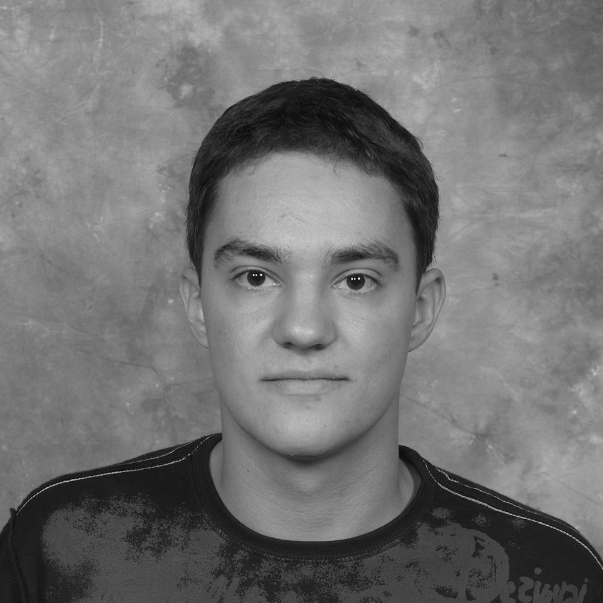

Luka Mustafa is Shuttleworth Foundation Fellow and working full-time on KORUZA development as well as finishing his masters MEng Electronic Engineering with Communications Engineering MEng student at University College London (UCL). He is actively involved in wlan slovenija community wireless network and the construction, deployment and management of national and international wireless backbones. He actively pursuits the development of new and efficient systems by re-purposing mass-produced components and equipment and contributes to several open-hardware and electronics projects worldwide, with intern experience from sound-system to particle accelerator control systems.

Eva Černčič holds a masters degree in applied mathematics from the Imperial College London (2013-2014) and has obtained a bachelors degree in mathematics from the University of Southampton in 2013. As an intern at the Jožef Stefan Institute of Science in Slovenia, she contributed to the development of an intelligent agent system and the statistical analysis of obtained data in the Department of Intelligent Systems. She is interested in the field of analytical fluid dynamics and aero-craft flight analysis, in which she also completed her masters thesis about the unsteady aerofoil dynamics.
She is a full-time Institute IRNAS employee and focuses on analysis and evaluation of designed systems and bridges the gap between science and industry.
Jernej Kos is a computer science researcher, software developer and network engineer with several years of experience. He enjoys working on interesting projects, specifically with backend architecture and low-level details. He has experience with scalable web application development, development of software for embedded devices, routing protocol internals and more. In 2005 he co-founded a software development and consultancy company specialising in the above fields. He is also involved with open source projects, the most prominent being wlan slovenija, where he has developed a modular platform for network monitoring and provisioning. His current research interests include secure, privacy-aware decentralised services and their uses.
Mihael Miško is a student of Mechanical engineering at University of Maribor. He found his place in IRNAS as a developer of open-source low-cost production systems. His knowledge was gained in the workplace, as a programmer, designer and developer in CNC machining and telecommunication industry where he perfected his skills of advanced CAD/CAM programs. He was involved in various international startup projects in the automotive and telecommunication sector, where he worked as a developer and project carrier.

Blaž Bratuš is a student at Faculty of Mechanical Engineering, University of Maribor. He is developing 3D printers and 3D printable systems and has experience in 3D modelling with CAD software programs CATIA, SolidWorks, Onshape, OpenSCAD and AutoCAD. He is a part-time student member at IRNAS.
Luka Banović holds a first class BSc in Acoustical Engineering from the University of Southampton, UK (2012 – 2015) and is continuing his studies for Dipl. Ing. Medical Engineering in FH-OÖ Linz (2015 -2018). As an acoustical engineer, he is highly involved in researching and developing acoustic metamaterials and high-precision paste extrusion ceramic 3D printing. He is a part–time student member at IRNAS, widening the selection of fields of expertise to very specific ends of engineering. He is a student member of the international organization the Institute of Acoustic since 2012.
Alan Lazarov is an engineering student at University of Maribor and is passionate about industrial design and 3D modeling. He is a certified SolidWorks Expert, long term contributor to University of Maribor Formula student team with a focus on automotive bodywork. While working on projects for various industries, Alan has gained experience in CAD/CAM design, parametric design, complex surface design, mold design for composite structures and reverse engineering.